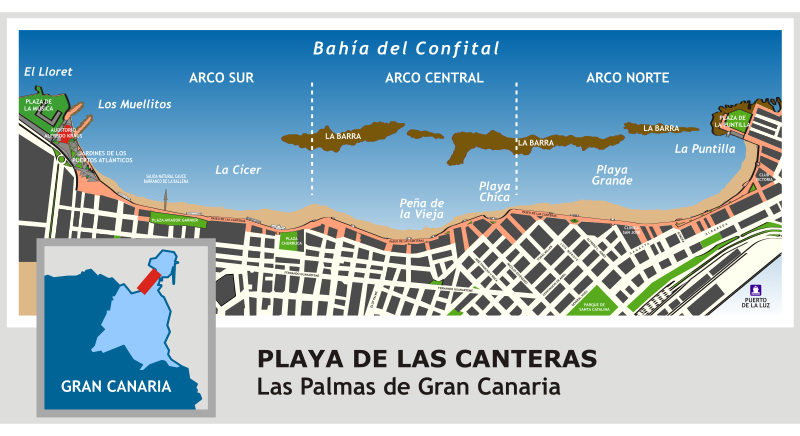

La playa por zonas
La Playa de Las Canteras comprende tres zonas que se corresponden con los arcos e inflexiones que esta realiza en el litoral. Cada una de ellas presenta unas características especificas que las hacen propicias para distintas actividades y ambientes.
Extremo de La Cícer. (Arco sur)
La playa de La Cícer es un área dentro de la Playa de Las Canteras, en la parte más occidental del barrio de Guanaterme. Es la mejor zona de Las Palmas para la práctica del surf y la única zona de toda la playa donde se permite practicar deportes. Es de arena negra volcánica y siempre tiene buen oleaje ya que no cuenta con la protección de la barrera de coral que sí tiene el resto de la playa. Si te gusta el surf o el bodysurf, esta es tu playa en la ciudad. Hay buenas olas todo el año y rompen sobre fondo de arena, lo que la hace más segura para este deporte. Es perfecto tanto para surfistas avanzados como para principiantes. Puedes ver esta separación entre los que están más cerca de la orilla y los que están más atrás. Cerca de la playa, detrás del paseo marítimo en las calles aledañas, encontrarás infinidad de escuelas de surf como Buen Surf Sochool, 3RJ Surf Time, Oceanside Surf School, Feel Surf Camp, Mojosurf School, Surf Camp Low Cost, Brisa Surf School o California Sports Centro. Si quieres aprender a surfear, aquí tienes las escuelas e instructores que necesitas. Aquí se realizan campeonatos locales e internacionales de surf y body surf, como el Tour Europeo de Bodysurf.r. En el barrio también encontrarás bares, restaurantes y todo tipo de comercios, incluido un gran centro comercial.
La Peña de la Vieja y playa chica. (Arco central)
La zona central es más familiar, con la emblemática Playa Chica que ofrece aguas tranquilas para el baño y donde también destaca la popular Peña de la Vieja, una zona rocosa que deja su bonito arrecife a relucir en las mareas bajas. Sin tumbonas, es un área local. Puedes nadar desde Playa Chica hacia el arrecife para disfrutar del mejor esnórquel en Gran Canaria. Las rocas y los lechos de maleza están llenos de coloridos lábridos y peces loro, e incluso puedes ver morenas, rayas y pulpos. Elige playa chica para disfrutar de un ambiente local y hacer esnórquel.
Playa grande y la puntilla. (Arco norte)
La Puntilla en el extremo norte de la playa de Las Canteras. Siempre tranquila, siempre bonita, esta es
la playa de Las Canteras por excelencia y un buen lugar para comer en el paseo marítimo. El agua es casi
siempre tranquila y cálida, y hay muchas tumbonas y sombrillas para alquilar. La multitud de La Puntilla
es una buena mezcla de visitantes extranjeros y locales.
Playa Grande es tan amplia que siempre encontrarás espacio para tu toalla. Las aguas de Playa Grande
están protegidas por el arrecife y son muy seguras para nadar. Dispone de aseos e instalaciones, acceso a
la playa para minusválidos y tiendas de venta de papeles internacionales. Playa Grande es la parte más
popular de la playa entre los turistas porque varios de los grandes hoteles de la ciudad están justo al
lado.
Elige Playa Grande por su hermosa arena dorada, aguas tranquilas y amenidades. Es perfecto para familias
que quieran pasar un día holgazaneando en la playa y estar cerca de tiendas y restaurantes.